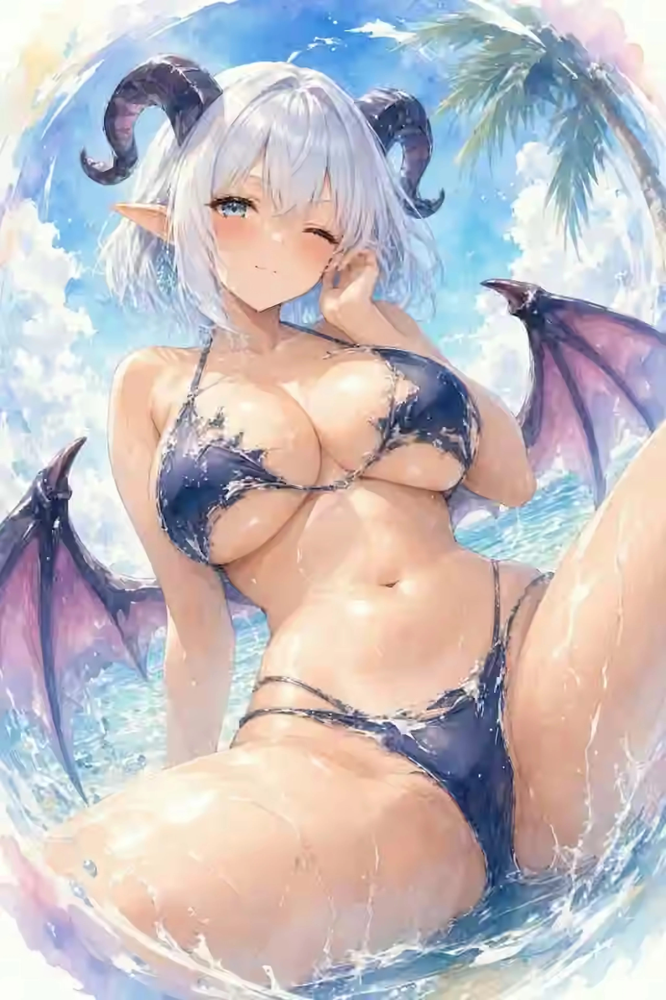

VISITOR 02 / CHARACTER FILE
VIOLETHARE
紫苑の兎姫
THE RESTLESS DANCER OF VIOLET WIND
静かな庭園に、突然テンポを持ち込む紫の来訪者。
思いついた瞬間に動き、面白そうなら迷わず飛び込む。彼女の周囲だけ空気が一拍速くなったように感じられ、回廊も階段も即席のステージへ変わっていく。
PLAYFULVIOLETDANCEMOTION
THEME COLORElectric Violet
FAVORITE PLACE浮遊回廊の中央広場
MOTIF兎・跳躍・ダンス
02
SECOND VISITOR